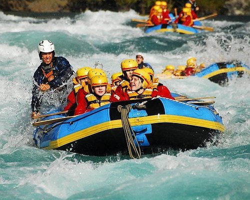

Rafting in Nepal
Rafting in Nepal offers thrilling river adventures through scenic landscapes and challenging rapids.
Whether you're an adventure seeker or looking for something more relaxed, Nepal offers a wide range of activities to suit every taste and adventure level.
Rafting in Nepal offers thrilling river adventures through scenic landscapes and challenging rapids.
Trekking in Nepal encompasses breathtaking journeys through the majestic Himalayas, revealing stunning vistas and cultural encounters along ancient trails.
| Activity | Description | Location |
|---|---|---|
| Trekking | Explore the Himalayas on foot. | Everest, Annapurna |
| Paragliding | Experience flying over picturesque landscapes. | Pokhara |
| Rafting | Adventure down the rivers. | Bhote Koshi, Trishuli |